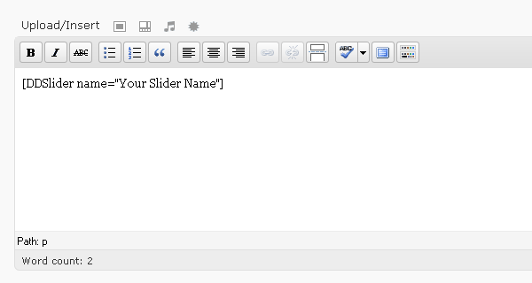

Start by logging in into your WordPress admin panel. Once you have logged in, go to the plugins area (clicking on the plugins menu item). Now we need to upload our plugin. Right next to the plugin heading, there is a 'Add New' button. Click on it. You'll be redirected to the install plugin area. Click on the link 'Upload'. Now chose your plugin file (in our case the .zip file you've just downloaded from CodeCanyon.). Now click Upload. Once the upload is finished, go back to the plugins main area and activate DDSlider WP Plugin.
There are two ways of inserting sliders in your pages.
The first thing you'll want to do is create a new slider. DDSliderWP supports multiple sliders, meaning that you can have 5 different sliders and use them in different pages. Please note that even though DDSliderWP supports multiple sliders, this does not mean that they support multiple sliders on the same page.
Once you've activated your slider, you'll notice that a new menu has appeared at the bottom of your admin panel menu. There are 2 otpions in this menu "Slide Manager" and "General Options".
We need to first create our slider, so by clicking on "General Options" you'll be redirected to a page where you'll find two fields to add a new slider. Please refer to the list below to know each field:
After filling out the form, you may now press "Add New Slider".
A new slider will appear on your General Options Panel. You can either edit its configurations or delete the slider. Please note that if you delete a slider from the General Options page, its sliders will be removed from the Manager Slider panel as well.
Click on Edit to configure your slider.
Every new added slider already has its predefined options.
The General Options page is divided into sections to best organize it. The sections are organized by importancy, meaning that the most important options are at the top.
You'll find that each field has an Info icon next to it. You can click them at any time to get information about that specific field.
The fields that you'll probably be editing is Width and Height.
There are a few fields that I'd like to describe a bit further:
#myArrowId or .myArrowClassOther than these options, all options are very straight forward and you can easily get info on each one of them using the info Icon.
After configuring your slider you can save your options. Now let's add slides!
By accessing the slide manager panel, you'll find yourself before a very user friendly panel. At the top (currently you won't have anything because we haven't added slides yet!) you'll find the slide manager panel.
Right below it you'll find a set of fields to define information, so we can add a slider. Each field has an 'i' icon next to it. Click on them to open a detailed information of each field.
Even though there are info icons next to every field, there are two fields I'd like to talk about:
When adding a slide, you can check this box if you want to 'crop' the image chosen. If the image you have uploaded or included in the field is either larger or smaller than the defined slide width and height, this image will be resized to fit your slider perfectly.
This option is really good if you are using an image that is smaller than the defined slide width and height, or if you are using inline content. This will prevent the slider from playing weird contentless transitions.
Whenever you make a change to a slide, do not forget to hit the 'Save Changes' button. Otherwise, changes will have no effect whatsoever and you'll go back to the original place if the page is reloaded.
To insert your slider using the WP Admin panel, start by creating/editing a page/post. To inert your slider, all you have to do is include a shortcode in your content area, wherever you want it to appear.
Don't forget to insert the name of your slider, otherwise no slider is displayed. Follow the example below

Make sure you also write your slider name correctly.
To insert the slider directly into a PHP file, open your PHP file and add the following function wherever you want it to appear
<?php if(function_exists('displayDDSlider')) { echo displayDDSlider(array(name=>"Your Slider Name")); } ?>
Remember to include your slider name between quotes and spell it correctly.
To be honest, if you or your client does not have a notion of HTML and CSS, Inline content can be a problem for you.
The slider itself deals with whatever is inside the LI tag. if you have text, the script will clone your text into each block of transition. So if your current slide is transparent, this means that you'll pretty much have an invisible transition as well. In order to add Inline content like the one you see in the Live Demo, you need to set up a few things first:
Let's start by the steps mentioned above:
Let's start by adding a wrapping container with a background so we don't get transparent transitions. For this example I'll be using our default width and height values - 960x300.
<div style="
background: #ffffff url(your background image url) repeat-x top left
">
[...]
</div>
With our DIV container wrapping all of our content, we don't have to bother about transparent transitions anymore. But if you add just a little of text, it won't matter much, because or div wrapping container doesn't have and width and height set so it'll automatically assign the width and height of our content (which can be as little as line height). So let's also assign a width and height:
<div style="
background: #ffffff url(your background image url) repeat-x top left;
width: 960px;
height: 300px;
">
[...]
</div>
Now we've just added width and height to our DIV container, this exapands our box, and now it fills the entire LI! But hold on, my content is right on the edge of my slider, how can I add some margin to it?
Simple, we'll add padding to our DIV container. Adding padding can be quite confusing if you are not used to HTML & CSS. Whenever you add padding to a container that has a width and height defined, the pdding is added to the width and height. For example, if you have a 1000px long DIV container, and adding 100px of padding on the left, your DIV container will actually be 1100px wide and not 1000px. Said so, wheneve you add padding to the left or right, you'll need to subtract this value from the width, and whenever you add padding on the top or bottom, you'll need to usbtract the padding from the height value.
In the next example I'll be adding 50px padding on each side of my DIV container, pay attenction how my width and height will be reduced.
<div style="
background: #ffffff url(your background image url) repeat-x top left;
width: 860px; /* (which is actually 960px - 50px - 50px) */
height: 200px; /* (which is actually 300px - 50px - 50px) */
padding-top: 50px;
padding-right: 50px;
padding-bottom: 50px;
padding-left- 50px;
">
<h2>Now I can add Inline Content!</h2>
</div>
From here on, you are free to insert buttons, links, paragraphs, lists and much more. I won't get into details of adding buttons and etc because the point of this documentation is to just explain the inline content function and not to teach HTML and CSS.
If you need support or have any other issues with your slide, please contact me using the contact form on this page. Remember that it is not the author's responsability to offer support to his items. However, if you need any help setting up your slide, contact me through the link given above and DDStudios will get back to you as soon as possible. Charges may apply.